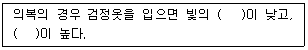
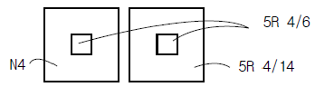
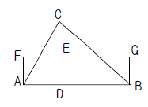
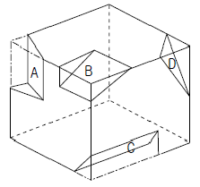
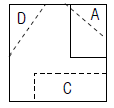
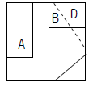
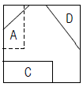
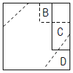
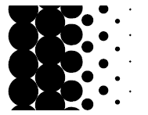
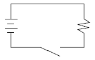

시각디자인산업기사 (2006-09-10 기출문제)
1과목: 색채학
1. 다음 색채조화에 대한 일반적인 설명 중 잘못된 것은?
- 명도 차가 확실하면 조화되기 어렵다.
- 같은 계열 색상끼리의 배색은 조화되기 쉽다.
- 무채색은 어떠한 색과도 조화되기 쉽다.
- 2가지 이상의 배색에서 색의 3속성이 모두 애매한 차이를 가지면 조화되기 어렵다.
(정답률: 알수없음)

2. 빨강색을 보고 어떤 사람은 빨강 포스터를 생각하고, 어떤 사람은 소방차를, 또 어떤 사람은 빨강 잉크를 생각하게 된다. 이와 같은 현상은 색의 어떤 성질을 말하는가?
- 색의 연상
- 색채의 상징
- 색채의 심리
- 색자극
(정답률: 알수없음)
3. 색채의 여러 효과에 대한 설명 중 잘못된 것은?
- 난색이 한색보다 진출해 보인다.
- 고채도의 색이 저채도의 색보다 주목성이 높다.
- 한색이 난색보다 기억되기 쉽다.
- 저명도의 색이 고명도의 색보다 후퇴해 보인다.
(정답률: 알수없음)
4. 우리나라 KS표준 색표이며 색채 교육용으로 채택된 표색계는?
- 먼셀 표색계
- 오스트발트 표색계
- 문.스펜서 표색계
- 져드 표색계
(정답률: 알수없음)
5. 보색에 의한 배색의 장점을 설명한 것으로 잘못된 것은?
- 선명한 조화를 만든다.
- 화면 전체에 걸쳐 사용하면 좋다.
- 강력하고도 생기있는 화면효과를 만든다.
- 망막의 자극을 상홰시킴으로써 눈의 완전성에 대한 욕구를 해소한다.
(정답률: 알수없음)
6. 먼셀 기호 2.5B 4/8에서 명도 값은?
- 2.5
- 4
- 8
- 12
(정답률: 알수없음)
7. 문.스펜성의 색채조화론에 대한 설명 중 잘못된 것은?
- 감성적으로 다루어졌던 조화론을 정량적으로 다룬 과학적 조화론이다.
- 각자의 경험이나 주관을 통합한 색채조화론이다.
- 미적계수를 산출해낼 수 있도록 시도하였다.
- 먼셀 표색계를 활용하여 연구한 조화론이다.
(정답률: 알수없음)
8. 푸르킨예 현상을 바르게 설명한 것은?
- 해가 진 야간시에는 단파장의 색이 잘 보이는 현상
- 어떤 조명 아래에서 물체섹을 오랫동안 보면 그 색의 감각이 약해지는 현상
- 수면에 뜬 기름이나, 전복껍질에서 나타나는 색의 간섭현상
- 황색, 적색, 녹색 등 유채색을 느끼는 세포의 지각현상
(정답률: 알수없음)
9. 오스트발트(Ostwald)표색계에 대한 설명 중 옳은 것은?
- W + B + C = 100 이 되는 혼합비에 의하여 구성되어 있다.
- 영.헬름홀쯔(Young-Helmholtz)의 3원색설에 기초를 두고 있다.
- 명도구분은 N1,N2,----------- N9로 나타낸다.
- 최초의 기본 5색은 R, Y, G, B, P이다.
(정답률: 알수없음)
10. 다음 ( )안에 적합한 단어를 순서대로 나열한 것은?

- 흡수율, 투과율
- 흡수율, 반사율
- 반사율, 투과율
- 반사율, 흡수율
(정답률: 알수없음)
11. 색명에 관한 다음 설명 중 잘못된 것은?
- 톤의 명칭에서 pale보다 deep이 채도가 높다.
- reddish는 빨강기미, grayish는 회색기미의 색을 말한다.
- 빨강의 순색은 5R 4/14이다.
- strong은 가장 채도가 높은 순색이다.
(정답률: 알수없음)
12. 색지각에서 일상 경험하는 시지각의 종류가 아닌 것은?
- 색에 대한 지각
- 빛의 심리에 대한 지각
- 빛의 공간적 분포에 대한 지각
- 빛의 시간적 변화에 대한 지각
(정답률: 알수없음)
13. 영화간에 들어갔을 때 한참 후에야 주위 환경을 지각하게 되는 시지각 현상은?
- 명순응
- 색순응
- 암순응
- 시순응
(정답률: 알수없음)
14. 색채의 대비현상에 관한 다음의 그림은 무엇과 가장 관련이 있는가? (단, 색채기호는 먼셀의 색기호임)

- 명도대비
- 색상대비
- 채도대비
- 보색대비
(정답률: 알수없음)
15. '조화란 질서와 같다' 라는 원리를 세운 사람은?
- 문.스펜서
- 헤링
- 오스트발트
- 먼셀
(정답률: 알수없음)
16. 색채계획의 과정 중 색채전달계획('어떤 색으로 결정할 것인가') 단계에서 가장 팔요한 능력은?
- 자료 수집 능력
- 색채 이미지의 계획 능력
- 미적 감각의 능력
- 심리 조사 능력
(정답률: 알수없음)
17. 색의 감정을 바르게 나열한 것은?
- 적색 - 분노, 해바라기, 노을, 식욕
- 녹색 - 이상, 안정, 여름, 평화
- 청색 - 생동, 새싹, 슬픔, 안정
- 자색 - 보석, 정열, 흥분, 불안
(정답률: 알수없음)
18. 다음 설명 중 잘못된 것은?
- 빛의 파장 차이에 의해서 색을 분별하는 감각을 '색각'이라 한다.
- 영(Young)은 인간의 안구 생리에 대해서 광혼합의 실험결과 물리적 가산혼합의현상으로 '색각의 3색설'을 주장하였다.
- 헬름홀츠(Helmholtz)는 영의 이론을 실험적으로 정리하고, 빨강, 노랑, 파랑을 3원색으로 주장하였다.
- '영, 헬름흘츠의 3원색설'은 정상인과 색맹자의 색삭현상을 모두 설명하기에는 부족한 부분이 있다.
(정답률: 알수없음)
19. 오스트발트의 색입체를 수평으로 잘랐을 때 생기는 등가색환의 수는?
- 8개
- 15개
- 24개
- 28개
(정답률: 알수없음)
20. E.헤링의 색각이론에서 주장된 4원색은 무엇인가?
- 빨강, 파랑, 흰색, 검정
- 빨강, 파랑, 노랑, 녹색
- 빨강, 파랑, 노랑, 자주
- 빨강, 파랑, 노랑, 회색
(정답률: 알수없음)
2과목: 인쇄 및 사진기법
21. 인쇄용지를 비도포지, 도포지, 판지로 나눌 때 도포지에 해당되는 것은?
- 아트지
- 중질지
- 갱지
- 모조지
(정답률: 알수없음)
22. 컬러 필름의 지지체 위에 구성된 다층 유제의 3가지 감광층은?
- 적색(R), 시안(C), 청색(B)
- 마젠타(M), 흑색(BK), 황색(Y)
- 적색(R), 녹색(G), 시안(C)
- 청색(B), 녹색(G), 적색(R)
(정답률: 알수없음)
23. 평판제판 중에서 가장 널리 사용되는 방법으로 처리 과정이 간단하고 화상재현이 우수한 것은?
- 난백판
- 와이프온판
- 평오목판
- PS판
(정답률: 알수없음)
24. 책 표면가공의 기능과 목적에 해당되지 않는 것은?
- 인쇄면의 광택부여
- 내약품성
- 잉크퇴색방지
- 원가절감
(정답률: 알수없음)
25. 가시관 전 영역에 감광 파장역을 갖는 분광증감 유제의 감색성은?
- 레귤러(regular)
- 오소크로매틱(orthochromatic)
- 팬크로매틱(panchromatic)
- 적외형(infrared)
(정답률: 알수없음)
26. 사진을 인화할 때 특정 부분에 노광을 더 주는 것을 무엇이라 하는가?
- 버닝
- 닷징
- 크로핑
- 트리밍
(정답률: 알수없음)
27. 단초점 렌즈에 관한 설명 중 틀린 것은?
- 단초점 렌즈는 표준 렌즈보다 화각이 넓다.
- 단초점 렌즈는 좁은 방이나 한정된 공간에서 사용하면 편리하다.
- 단초점 렌즈는 원근감이 과장된다.
- 단초점 렌즈는 피사계 심도(Depth field)를 얕게 형성하므로 초점을 정확하게 맞추어야 한다.
(정답률: 알수없음)
28. 피사체를 선택적으로 좁은 부분만 측정하고 할 때 사용하는 노출계는?
- Cds식 노출계
- 스폿 노출계
- 입사식 노출계
- 여고앞의 아담의 노출
(정답률: 알수없음)
29. 속장과 표지를 따로 가공하는 방식으로 책이 아름답고 튼튼하며 사전류나 장서류 등에 많이 이용되는 제책 방법은?
- 양장
- 반양장
- 호부장
- 중철
(정답률: 알수없음)
30. 잉크가 인쇄판을 통과하여 인쇄되는 대표적인 방식은?
- 볼록판 인쇄
- 평판인쇄
- 오목판인쇄
- 스크린인쇄
(정답률: 알수없음)
31. 화학펄프를 사용한 원지에 황산바륨 안료와 젤라틴을 도포하여 광택 가공한 매끄러운 종이로써 사진 인화지용의 원지로 사용되는 것은?
- 코튼지
- 버라이터지
- 크라프트지
- 강광택지
(정답률: 알수없음)
32. 컬러사진에서 감광재료에 사용되는 색소를 형성할 수 있는 물질은?
- 할로겐화은(AgX)
- 젤라틴(gelatin)
- 커플러(coupler)
- 현상제(developer)
(정답률: 알수없음)
33. 평판 인쇄물의 특징에 대한 설명 중 틀린 것은?
- 같은 높이의 판면으로 화학적인 원리에 의하여 인쇄하는 방법이다.
- 오프셋 인쇄는 대부분 직접인쇄 방식이므로 잉크 전달량이 많다.
- 윤전인쇄가 가능하다.
- 인쇄물이 부드러운 느낌을 준다.
(정답률: 알수없음)
34. 흑백사진의 현상 주약이 아닌 것은?
- 하이드로퀴논
- 메톨
- 페니돈
- 티오황산나트륨
(정답률: 알수없음)
35. 다음 중에서 카메라 조리개 설정시 피사계 심도가 가장 깊은 것은?
- f/3.5
- f/5.6
- f/11
- f/32
(정답률: 알수없음)
36. 서체의 크기 중 14급은 다음 중에서 몇 포인트에 가장 가까운가?
- 5 포인트
- 7 포인트
- 10 포인트
- 14 포인트
(정답률: 알수없음)
37. 감광층을 투과한 빛이 지지체의 경계면에서 굴절 반사되어 감광층을 감광시키는 현상은?
- 헐레이션 현상
- 이레디에이션 현상
- 솔라리제이션 현상
- 간헐 효과
(정답률: 알수없음)
38. 특수한 인화기법 중에서 현상 중의 필름에 적장한 빛을 쬐어, 한장의 화면에 음화와 양화가 함께 나타나게 하는 효과를 얻을 수 있는 기법은?
- 디포메이션
- 솔라리제이션
- 더블 프린트
- 포토 몽타즈
(정답률: 알수없음)
39. 인쇄 중에 뜯김(Picking)의 주된 발생 원인이 아닌 것은?
- 잉크의 점착성이 지나치게 높을 때
- 종이의 표면 강도가 낮을 때
- 도피층의 접착력이 부족할 때
- 잉크의 색료가 과량일 때
(정답률: 알수없음)
40. 사진 기술을 응용하여 인쇄하는 방식으로 다색물일 때는 색채가 매우 풍부하지만 제판비가 비싼 인쇄 방식은?
- 오프셋 인쇄
- 볼록판 인쇄
- 그라비어 인쇄
- 스크린 인쇄
(정답률: 알수없음)
3과목: 시각디자인론
41. 다음 중 시각전달 디자인에 속하는 것은?
- 인테리어 디자인
- 패션 디자인
- 편집 디자인
- 공예 디자인
(정답률: 60%)
42. 미술공예운동에 대한 내용 중 잘못된 것은?
- 윌리엄 모리스가 주축이 된 운동이다.
- 수공예가의 사회적 책임의 중요성을 역설했다.
- 기계에 의한 대량생산을 중시했다.
- 미술과 공예를 통하여 수공예의 발전을 꾀하고자 하였다.
(정답률: 알수없음)
43. C.I(Corporate Identity)의 기본 시스템(Basic Systeam)이 아닌 것은?
- 전용 색상
- 로고 타입
- 시그니쳐
- 안내표지판
(정답률: 알수없음)
44. 삼각형의 면적과 같은 직사각형 그리기 작도에서 제일 먼저 해야 하는 것은?

- 수평선 FG 구하기
- 수직선 AF, BG구하기
- C점에서 AB에 수선긋기
- CD의 중점 E를 정하기
(정답률: 알수없음)
45. 기본 형식은 점, 선, 면, 입체이며 이념적 형태로서 모든 형태의 기본이 되는 것은?
- 순수형태
- 현실형태
- 인위형태
- 자연형태
(정답률: 알수없음)
46. 기업의 디자인 정책에 관한 설명 중 바르지 않은 것은?
- 디자인이 기업경영의 화두로 부상하고 있다.
- 소비자들의 감성 니즈가 증가하였다.
- 기능이나 품질보다 디자인과 브랜드가 제품 선택의 중요 기준이다.
- 기업간 기술격차가 크고 가격경쟁이 적은 산업일수록 디자인이 효과적이다.
(정답률: 알수없음)
47. 기업의 디자인 정책에 관한 설명 중 바르지 않은 것은?
- 심미성
- 독창성
- 합목적성
- 경쟁성
(정답률: 알수없음)
48. 평면 도법의 선에 관한 설명 중 잘못된 것은?
- 모양에 따른 선의 종류에는 실선, 파선, 쇄선이 있다.
- 치수선, 지시선 등에는 쇄선을 사용한다.
- 보이지 않는 부분의 모양을 표시할 때는 파선을 사용한다.
- 길고 짧은 길이로 반복되게 그어진 선을 일점쇄선이라 한다.
(정답률: 알수없음)
49. 디자인의 사회적 기능과 거리가 먼 것은?
- 사회환경에 따라 진화해야 한다.
- 디자인은 새로운 책임감을 동반해야 한다.
- 뚜렷한 목적의식을 가져야 한다.
- 디자인의 기계화를 실현시키도록 한다.
(정답률: 알수없음)
50. 분리파(Secession)의 설명이 아닌 것은?
- 요셉 호프만, 구스타프 클림트, 콜만 모저 등을 중심으로 활동
- 모든 과거의 예술로부터 분리를 목표
- 곡선의 아름다움을 추구하는 자연주의적 경향
- 비엔나 공방을 통해 아름답고 질적으로 좋은 생활용품을 생산
(정답률: 알수없음)
51. 정투상법 중 제 1각법에 대한 설명으로 잘못된 것은?
- 정면도는 평면도 위에 그린다.
- 건축, 토목, 조선분야에 사용된다.
- 대상물을 투상면의 뒤쪽에 놓고 투상한다.
- 눈 → 물체 → 투상면의 순서가 된다.
(정답률: 알수없음)
52. 미국 공업디자인의 선구자로 모든 디자인 분야에 유선형의 개념을 주입시킨 디자이너는?
- 루이스 설리반
- 노만 벨 게대스
- 잘난 조영우
- 비에노
(정답률: 알수없음)
53. 바우하우스를 설립한 사람은?
- 윌터 그로피우스
- 모홀리 나기
- 섹쉬한 조영우
- 아돌프 마이어
(정답률: 알수없음)
54. 다음 중 잘못 연결된 것은?
- 미술공예 운동 - 마셜 포그너 상회
- 아르누보 - 헨리 반 데 벨데
- 유겐트스틸 - 독일식 아르누보 운동
- 독일공작연맹 - 러스킨과 빅토르오르타
(정답률: 알수없음)
55. 피부표면이 어떤 대상에 접촉했을 때 체험되는 감각은?
- 촉각
- 청각
- 미각
- 시각
(정답률: 알수없음)
56. 구매동기, 경쟁상품의 품질비교, 디자인에 대한 문제점 디자인 개선에 대한 요구사항이 조사되는 디자인 관리의 요소는?
- 새로운 재료, 부품의 조사
- 소비자 여론조사
- 경쟁상품에 대한 조사
- 출판물에 대한 조사
(정답률: 알수없음)
57. 다음 입체물에 대한 우측면도는?





(정답률: 알수없음)
58. 공업제품의 양질화, 규격화, 표준화에 의한 대량생산의 실현 즉, 산업과 예술이 대중생활에 공헌하는 현대적 의미의 산업디자인과 관련이 있는 것은?
- 영국 모리스 마셜 포그너 상회
- 독일 공작연맹
- 프랑스 파리국제예술박람회
- 미국 멤피스그룹
(정답률: 알수없음)
59. 디자인 원리에 속하지 않는 것은?
- 감각 (Sense)
- 통일(Unity)
- 조화 (Harmony)
- 균형(Balance)
(정답률: 알수없음)
60. 다음 그림과 가장 관계가 깊은 디자인의 원리는?

- 통일 (Unity)
- 균형 (Balance)
- 비례 (Proportion)
- 점이 (Gradation)
(정답률: 90%)
4과목: 시각디자인실무 이론
61. 브랜드 아이덴티티(Brand Identity)의 구성요소가 아닌 것은?
- 브랜드명
- 브랜드 로고타입
- 패키지
- 가격
(정답률: 알수없음)
62. 개념적인 어떤 것을 비합리적, 비논리적인 복합적 차원의 형태로 시각화하여 표현한 일러스트레이션은?
- 기하학적 추상 일러스트레이션
- 유기적 일러스트레이션
- 구상적 일러스트레이션
- 초현실적 일러스트레이션
(정답률: 알수없음)
63. 측정 가능한 광고 목표로써 DAGMAR법을 주장한 사람은?
- 스탠스 필드
- 레이
- 콜리
- 아아크
(정답률: 알수없음)
64. 아래 그림은 단순히 회로의 구성을 나타내기 위해 어떠한 약속의 기호를 사용하여 표현을 간소화한 것이다. 이 그림은 대상물 표시방법 중 어디에 해당되는가?

- 실체적 표시
- 통념적 표시
- 설명적 표시
- 규약적 표시
(정답률: 알수없음)
65. IBM이나 RCA처럼 인지효과나 일바적인 사용상의 편의를 감안하여 정식명칭을 근거로 설정, 일관되게 사용하는 회사나 기업체의 이름을 지칭하는 용어는?
- identity name
- corporate name
- visual name
- trade name
(정답률: 알수없음)
66. 타이포그래피에서 커닝(Kerning)이란?
- 특정한 글자 사이의 간격을 조정하는 것
- 특정한 문장 간의 간격과 길이를 조정하는 것
- 전체 문장의 단어 사이 띄어쓰기를 조정하는 것
- 전체 칼럼 사이의 간격을 조정하는 것
(정답률: 알수없음)
67. 심볼마크의 모티브로서 적당하지 않은 것은?
- 기업 이념
- 기업 이미지
- 기업의 성격
- 기업의 이윤
(정답률: 90%)
68. 다음 광고매체 중 소구대상이 가장 명확한 것은?
- 텔레비젼
- 라디오
- 신문
- DM
(정답률: 알수없음)
69. 다음 중 평면(2D) 디자인 분야로만 이루어진 것은?
- 타이포그래피, 편집디자인, 잡지광고
- 신문광고, 일러스트레이션, 슈퍼그래픽
- 포장디자인, 옥외광고, 홀로그래픽
- 포스터, 애니메이션, 무대디자인
(정답률: 알수없음)
70. 좌우 페이지가 나란히 놓인 펼친면을 가리키는 용어로 바른 표현은?
- 커버
- 스프레드
- 거터
- 헤드밴드
(정답률: 알수없음)
71. 기업의 상품 판매장에 P.O.P를 설치하고자 할 때 천정용으로만 나열된 것은?
- 포스터, 안내판
- 견본진열대, 샘플케이스
- 모빌, 깃발
- 현수막, 휘장
(정답률: 알수없음)
72. 다음 중 특정상품에 대한 브랜드 충성도가 매우 강하며 반복적, 관습적으로 구매하는 특징을 가진 소비자 유형은?
- 관습적 소비자 집단
- 신소비자 집단
- 감정적 소비자 집단
- 합리적 소비자 집단
(정답률: 알수없음)
73. 광고에서 의미적 혹은 비상식적으로 소비자를 자극하여 몇 차례로 나누어 주의집중시키는 광고 기법은?
- 티저광고
- 설득광고
- 타이업광고
- 간접광고
(정답률: 알수없음)
74. 수퍼 그래픽의 기능과 거리가 먼 것은?
- 지표물의 기능
- 공간조절의 기능
- 실용적 기능
- 생산적 기능
(정답률: 알수없음)
75. 다음 중 현대 커뮤니케이션의 특징이 아닌 것은?
- 비언어적 정보량의 증대
- 언어적 정보량의 증대
- 대량전달과 빠른 전달속도
- 멀티미디어를 통한 정보의 가공
(정답률: 알수없음)
76. 잡지광고 중 게재료가 가장 비싼 것은?
- 내지광고
- 표지 2면 광고
- 표지 3면 광고
- 표지 4면 광고
(정답률: 알수없음)
77. 다음 중 마케팅 믹스(4P)의 요소로 바른 것은?
- 제품, 촉진, 욕구, 시장
- 촉진, 가격, 광고, 욕구
- 홍보, 유통, 욕구, 제품
- 제품, 가격, 촉진, 유통
(정답률: 알수없음)
78. 신문광고의 종류 중 보도란 광고가 아닌 것은?
- 돌출광고
- 삽입광고
- 제목하 광고
- 기사체 광고
(정답률: 알수없음)
79. 다음 중 라이프 스타일(Life style)에 대한 설명으로 잘못된 것은?
- 소비자의 과거학습, 사회계층, 인구 통계 변수에 의해 결정된다.
- 사회전체 또는 사회 일부 계층의 차별적이고 특정적인 생활양식이다.
- 현재의 라이프 스타일 연구는 개성과 자아개념 등과 같은 내적동기를 포함하여 조사하는 것이다.
- 소비자의 구매졀정 동기를 파악하는 방법으로 고객의 세분화 및 선정작업이다.
(정답률: 알수없음)
80. 다음 중 신제품 개발의 성공 요인이 아닌 것은?
- 뛰어난 아이디어
- 고도의 기술
- 적정 가격의 설정
- 많은 개발 비용
(정답률: 알수없음)